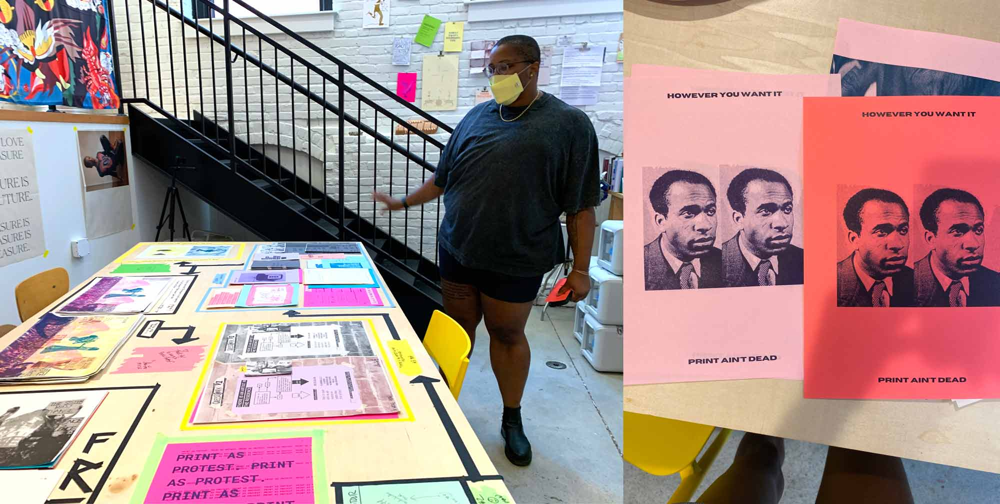
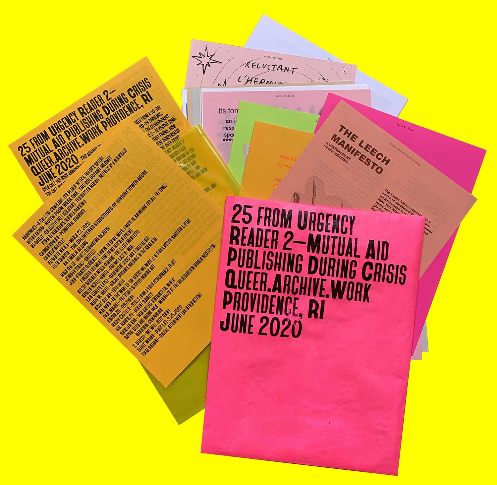
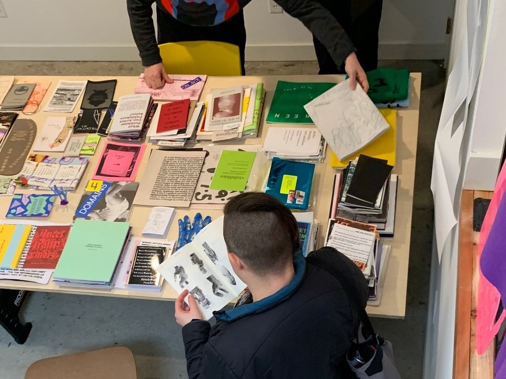
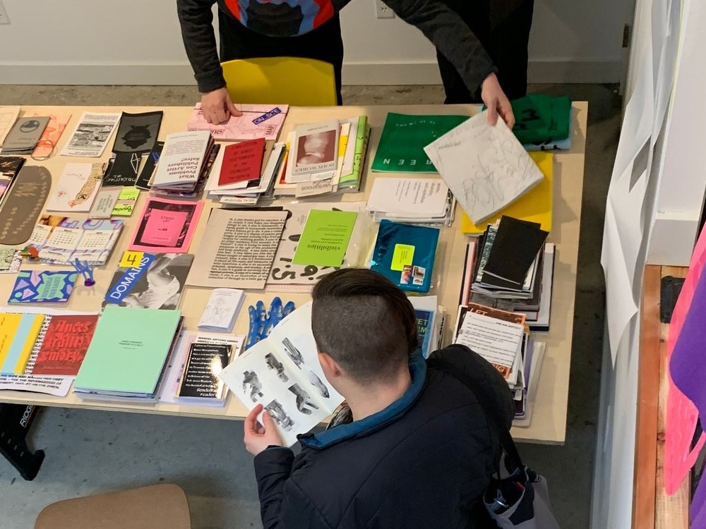
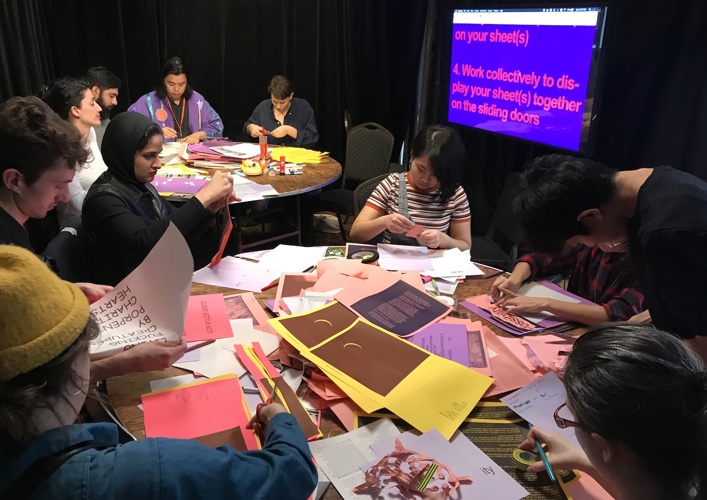
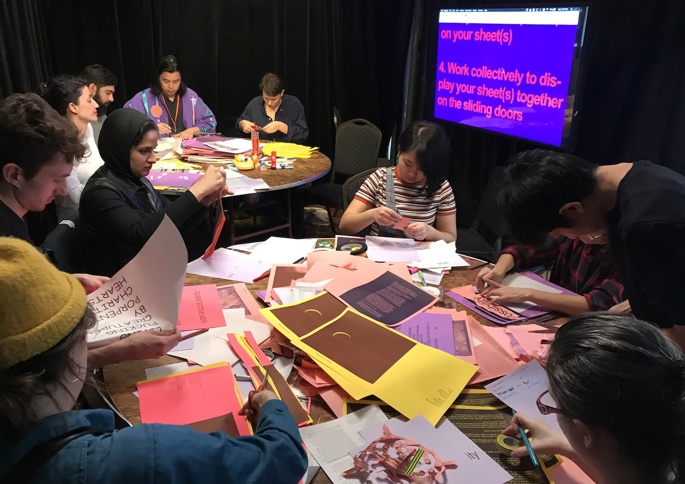
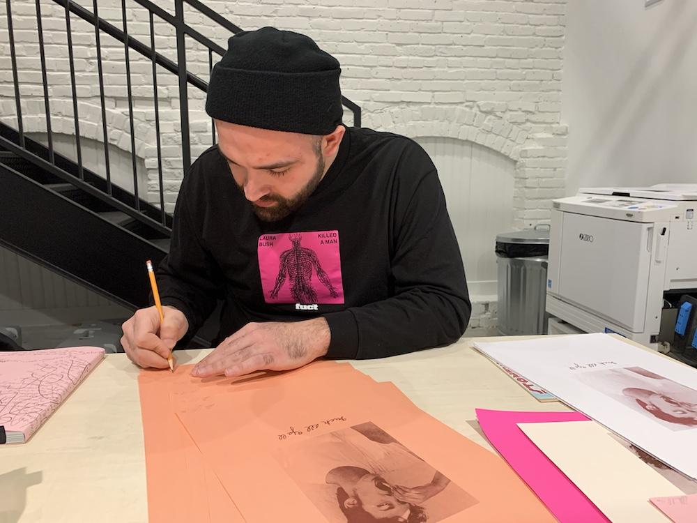
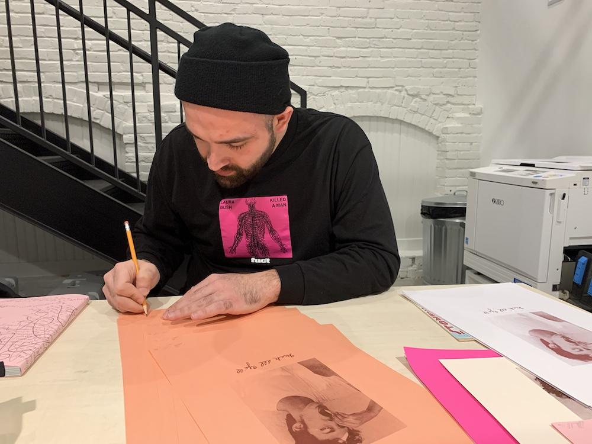

Queer.Archive.Work is a 501(c)(3) nonprofit reading room, publishing studio, and project space serving Providence, RI and beyond. → our mission
 Sloan Leo’s open studio at QAW, September 12, 2020 (left) / Cierra Michele Peters at work at QAW, August 2020 (right)
Who we serve: QAW welcomes all, but priority is always given to LGBTQIA+, BIPOC, immigrant, disabled, and other underserved folks. This is a free, open, and accessible anti-racist community space (please see our code of conduct). We welcome you to come by to chat about your work, use our risograph printer, make zines, and spend time in the reading room, but because of COVID-19 safety our capacity for visitors is limited. Please email if you’re interested!
We’re at 40 Sprague Street, #1G Providence, RI 02907, on the west side of Providence, in a building that used to be a rubber bicycle tire factory. Founder / Director / Attendant: Paul Soulellis.
News
QAW Riso Residencies
＊2020–21 QAW Residents Announced＊
Mutual Aid Publishing During Crisis
Urgency Reader 2 available for download
QAW at The Brooklyn Art Book Fair
A special reprint of excerpts from Urgency Reader 2 sold out at the Brooklyn Art Book Fair June 2020, benefiting The Marsha P. Johnson Institute and QAW Residencies



 

 

 

QAW Publishing
URGENCY READER 2 (April 2020)
URGENCY READER (December 2019)
QUEER.ARCHIVE.WORK 3 (September 2019)
QUEER.ARCHIVE.WORK 2 (January 2019)
QUEER.ARCHIVE.WORK 1 (September 2018)
QAW Workshops
Brooklyn Art Book Fair (June 2020)
Image Text Ithaca (June 2019)
Urgency Lab RISD (Spring 2019)
INTERRUPT V (February 2019)
NY Tech Zine Fair at SFPC (December 2018)
Hauser & Wirth/MoMA PS1 Bookstore (August 2018)
This website is licensed under Creative Commons CC BY-NC-SA 4.0 


Queer.Archive.Work, Inc. • Incorporated 2020 •
A 501(c)(3) not-for-profit organization
40 Sprague Street, #1G / Providence, RI 02907 / 212-243-5080
Instagram /
Twitter /
Email